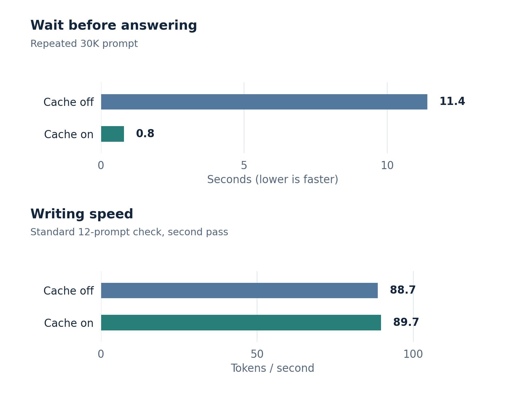

Read once, reuse the unchanged start
Prefix caching reduces the wait before an answer; long-context generation still has a cost.
Prefix caching makes the next answer start sooner. It saves the model’s already-computed representation of the unchanged start of a prompt. The next call reuses it and processes the remaining text.
Waiting and writing are different

Once generation starts, full-attention layers still use the retained context for each new token. A cached long document remains a long document.
All 12 answers matched the reference on both passes of the standard check. The cache was held in GPU memory.
All waiting and writing measurements
| Prompt or edit | First token without reuse | First token with reuse |
|---|---|---|
| Repeated 30K prompt | 11.4 s | 0.8 s |
| Middle edit in 30K, first request | 11.3 s | 6.7 s |
| Same edit, repeated | 11.3 s | 0.7 s |
| Question over 200K (separate probes) | 114 s | 2.0 s |
The 30K cases compare fixed 832-token reading chunks with reuse off and on. The 200K example combines separate long-context runs with different reading configurations.
| Server | First pass | Repeat pass | Exact per pass |
|---|---|---|---|
| Cache off | 88.5 tokens/s | 88.7 tokens/s | 12/12 |
| Cache on | 89.6 tokens/s | 89.7 tokens/s | 12/12 |
One server per configuration; the small decode-rate difference is not evidence of a speedup.
Did the answers change?
The exact-cache test returned the same output tokens in 99/99 cases, including repeat questions, edits and later turns. It covered prompts up to 30K; separate cold-repeat checks also matched at 120K.
How the cache stayed exact
This model combines ordinary attention with layers that carry a running state. The lab’s cache saves only states created while reading a prompt, and uses consistent 832-token reading chunks. It avoids mixing those states with ones created through a different computation path while generating an answer.
With drafting enabled, 99/99 cases returned the same token sequence as the matched uncached reference, including second and third conversation turns. The test covered eleven prompts up to 30K and up to 48 output tokens per case. Separate 120K cold repeats matched too. Matching output tokens is narrower than a scores-level or every-input guarantee.
What does it cost?
Smaller reading chunks made the initial read slower: a 30K prompt took about 11.4 seconds instead of 9.8; a 120K cold check took 69.6 instead of about 55. Saved checkpoints also consume GPU memory. Repeated questions recover that cost by skipping much of the reading.
An edit keeps only the matching prefix reusable. The 30K middle-edit test started in 6.7 seconds on its first edited request and 0.7 seconds on a repeat. Putting frequently updated state near the end reduces how much text must be recomputed. Eviction, a changed prompt or a restarted server can remove reuse.
Exact prefix reuse versus approximate suffix reuse
If an early passage changes, later internal states were calculated using the old passage. Reusing those states is an approximation even when the later words are unchanged. The CLM paper’s suffix-cache technique explores that tradeoff; it was not used in these exact-prefix results.
Detailed engine rules · vLLM’s explanation of prefix caching